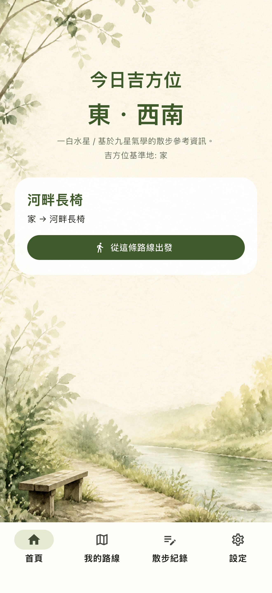
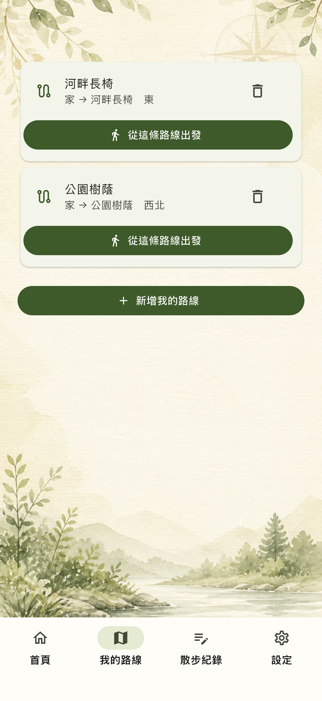
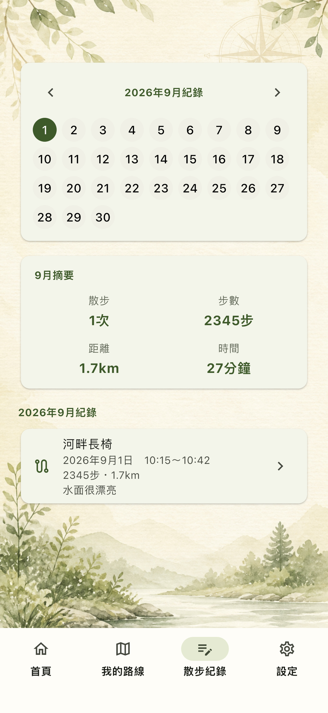
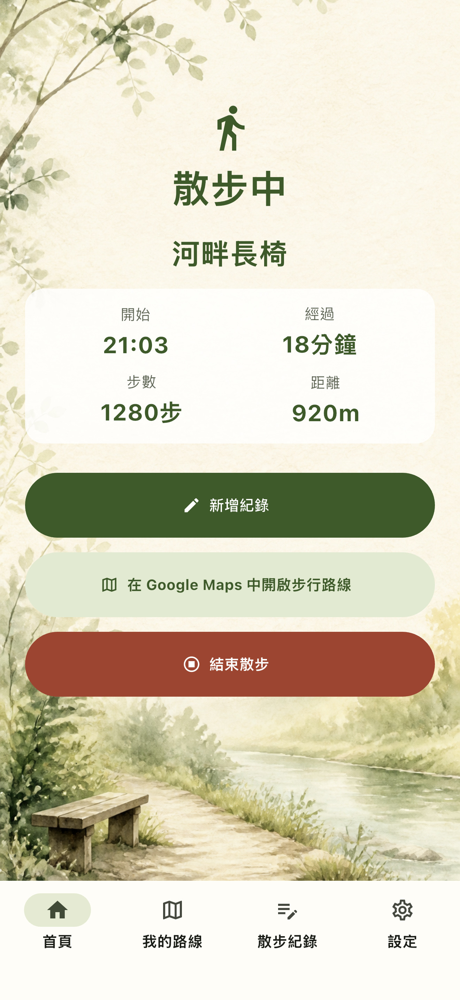

參考今日
吉方位
吉路根據九星氣學顯示今日方位。在決定要去哪裡時，給你一個溫和的參考。
幫助你開始散步的應用程式
吉路以今日吉方位為參考，協助你從已儲存的路線中選出今天要走的一條。
免費使用。你也可以不參考方位，直接從已儲存的「我的路線」出發。

01 / ABOUT
吉路是一款免費使用的散步應用程式，以今日吉方位為參考，從已儲存的「我的路線」中選擇路線，開啟步行路線，並記錄每次散步。
不知道要去哪裡，或想讓散步成為習慣的時候。不必花時間規劃，從熟悉的路中選一條「今天走這裡」，就能出發。
了解功能02 / FEATURES
無論是參考今日吉方位，還是選擇熟悉的路線，吉路都把開始散步所需的步驟整理成一段安靜的流程。

吉路根據九星氣學顯示今日方位。在決定要去哪裡時，給你一個溫和的參考。

儲存出發地、目的地、途經點和心情標籤。想在附近散步時，隨時叫出喜歡的路線。

在外部地圖應用程式或瀏覽器中開啟所選路線的步行路線。優先使用 Google Maps。

記錄步數、距離、時間、心情和備註。透過日曆或列表回顧過去的散步。
03 / HOW IT WORKS
設定一次、儲存熟悉的路線，然後為今天選一條要走的路。


在裝置上設定用來顯示今日方位的資訊。

為喜歡的散步路線命名，並儲存到「我的路線」。

開啟步行路線，散步後留下記錄。
04 / 應用程式畫面
不過度堆疊資訊，讓今天要做的事一目了然。沿著散步流程，看看吉路的五個畫面。
在首頁同時查看今日吉方位和已儲存的「我的路線」。有合適的推薦路線時可以直接選擇，也可以不在意方位，自己決定出發的路。

去附近的公園，去河邊的長椅。為路線命名並儲存，下次想散步時就能再次使用。在尋找新路線之前，先從自己的「我的路線」開始。


05 / 安心與隱私
吉路只是為開始散步提供一個契機。它不會把方位或測量資料當作任何保證。
吉路顯示基於九星氣學的方位，但不保證帶來好運或健康效果。
吉路不是一直追蹤位置的應用程式。使用目前位置時，請遵循 iPhone 的權限設定。
不需登入或雲端同步，已儲存的路線和散步記錄會在裝置上處理。
請確認交通、天氣、道路安全和自身狀態，在安全範圍內使用吉路。
06 / 常見問題
關於吉方位、位置資訊和已儲存路線。開始使用前，先了解這些內容。
吉路會根據九星氣學顯示方位，作為思考散步去向時的參考資訊。不保證帶來好運或健康效果。
可以。你可以不參考吉方位，直接從已儲存的「我的路線」中選擇任何散步路線出發。
不會。吉路不是一直透過 GPS 追蹤位置的應用程式。使用目前位置時，請遵循 iPhone 的權限設定和應用程式內說明。
不會。吉路不會自動產生沿道路的環形路線。你可以從預先儲存的「我的路線」中選擇今天要走的路線。
初期版本以 iPhone 為主進行設計。在 iPad 上，預計直接使用 iPhone 版本。
07 / 開始散步
免費使用。 已於 Google Play 上架。